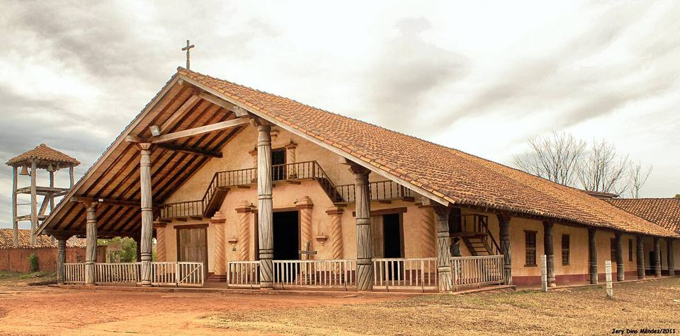
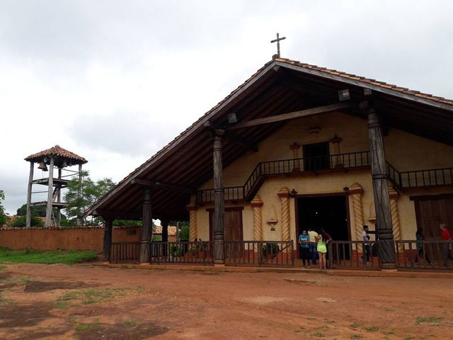
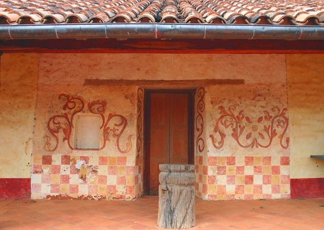
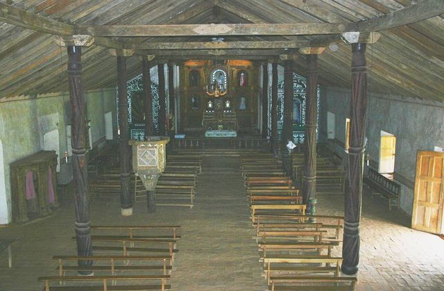
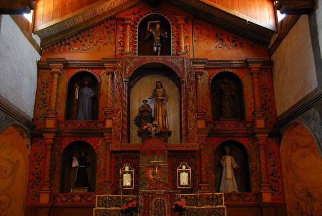
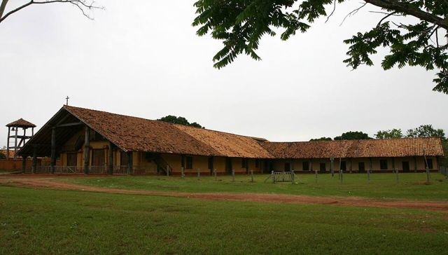
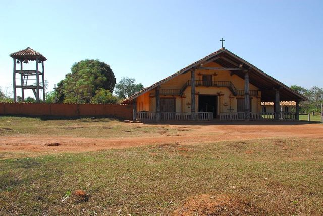

Missions: Santa Ana de Velasco
Santa Cruz Department · Culture and history

Santa Ana de Velasco is a tiny mission village set around a big grassy square. Its church, built by the Chiquitano people after the Jesuits left, has kept its tiled roof, wooden columns and an original 18th-century organ. Less restored than the others, it's often the one that moves visitors most: it feels like stepping into the mission as it was.
400 maltitude
0 to 1 dayto spend there
Things to do
- The church and its 18th-century organ
- Big grassy square and houses with verandas
- Ask the caretaker to open the church
What to eat
- Locro de gallinaA thick rice soup with free-range chicken, comforting and typical of the east.
- Chiquitos cheesesFresh cow's milk cheeses made in the mission villages, with homemade bread.
- Cuñapé and pan de arrozLittle cheese breads made with cassava or rice flour, served warm with coffee in the morning.
Tip. About 1 h from San Ignacio. No tourist lodging: go as a return trip or a loop with San Rafael and San Miguel.
Also here
- UNESCO Jesuit Missions of the Chiquitos
How to get to Santa Ana
San Ignacio Road (bus, car) · about 1 h
Taxi or hired car from San Ignacio, on a dirt track.
San Rafael Road (bus, car) · about 1 h
Dirt track, by taxi or on a day tour.
Photos of Missions: Santa Ana de Velasco












More places in this region
 Missions: San JavierThe first of the Jesuit missions of Chiquitos (UNESCO), with painted wooden churches.
Missions: San JavierThe first of the Jesuit missions of Chiquitos (UNESCO), with painted wooden churches. Missions: ConcepciónThe most beautiful square of the missions, with a restoration workshop and a museum.
Missions: ConcepciónThe most beautiful square of the missions, with a restoration workshop and a museum. Missions: San Ignacio de VelascoThe hub of the missions circuit, with its lagoon.
Missions: San Ignacio de VelascoThe hub of the missions circuit, with its lagoon. Missions: San Miguel de VelascoA Chiquitano mission with woodcarving workshops that are still very much alive.
Missions: San Miguel de VelascoA Chiquitano mission with woodcarving workshops that are still very much alive. Missions: San Rafael de VelascoA mission church decorated with mica and painted wood, between San Ignacio and San José.
Missions: San Rafael de VelascoA mission church decorated with mica and painted wood, between San Ignacio and San José. Missions: San José de ChiquitosThe only stone Jesuit mission, at the foot of the hills.
Missions: San José de ChiquitosThe only stone Jesuit mission, at the foot of the hills. Noel Kempff Mercado National ParkA vast and very remote UNESCO park: the Huanchaca plateau and the Arco Iris falls.
Noel Kempff Mercado National ParkA vast and very remote UNESCO park: the Huanchaca plateau and the Arco Iris falls.